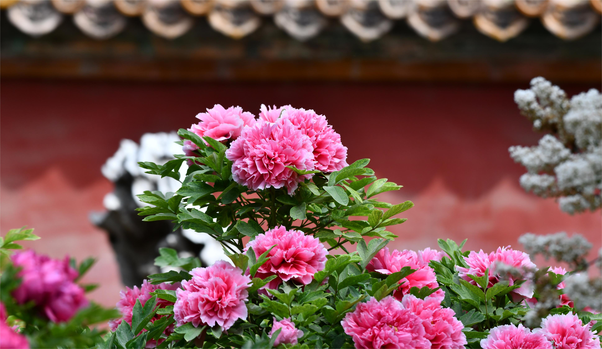

-
大花坛
大花坛是御花园的主景之一,占地三千多平方米。花坛四周种有400多种花卉,如康乃馨、郁金香、木本牡丹等。每年春季大花坛盛开的景色让人流连忘返。
-
长曲廊
长曲廊是一条200米长的砖木结构的廊亭，两侧种有芍药、紫藤等花草。长曲廊内还摆放了各种瓷器、翡翠等文物，让游客可以一边欣赏花草景观，一边领略皇家珍宝。
-
万春亭
万春亭则是御花园的最高点，建于花园中心，高达十几米。下面是一座水池，可以俯瞰整个御花园的美景。在万春亭中，还可以看到一些珍藏的瓷器与书画。
-
御花园简介
御花园位于北京紫禁城中轴线上大内最北部，坤宁宫后方，明代称为宫后苑，清代称御花园。始建于明永乐十八年 (1420年)，以后曾有增修，现仍保留初建时的基本格局。全园南北纵80m，东西宽140m，占地面积12000㎡。园内主体建筑钦安殿为重檐盝顶式，坐落于紫禁城的南北中轴线上，以其为中心，向前方及两侧铺展亭台楼阁。园内青翠的松树、柏树和竹子间点缀着山石，形成四季常青的园林景观。
称“御花园”。位于紫禁城中轴线的北端，正南有坤宁门同后三宫相连，左右分设琼苑东门、琼苑西门，可通东西六宫；北面是集福门、延和门、承光门围合的牌楼坊门和顺贞门，正对着紫禁城最北界的神武门。园墙内东西宽135米，南北深89米，占地12015平方米。园内建筑采取了中轴对称的布局。中路是一个以重檐录顶、上安镏金宝瓶的钦安殿为主体建筑的院落。东西两路建筑基本对称，东路建筑有堆秀山御景亭、璃藻堂、浮碧亭、万春亭、绛雪轩；西路建筑有延辉阁、位育斋、澄瑞亭、千秋亭、养性斋，还有四神祠、井亭、鹿台等。这些建筑绝大多数为游憩观赏或敬神拜佛之用，唯有璃藻堂从乾隆时起，排贮《四库全书荟要》，供皇帝查阅。建筑多倚围墙，只以少数精美造型的亭台立于园中，空间舒广。园内遍植古柏老槐，罗列奇石玉座、金麟铜像、盆花桩景，增添了园内景象的变化，丰富了园景的层次。御花园地面用各色卵石镶拼成福、禄、寿象征性图案，丰富多彩。著名的堆秀山是宫中重阳节登高的地方，叠石独特，磴道盘曲，下有石雕蟠龙喷水，上筑御景亭，可眺望四周的景色。


- 